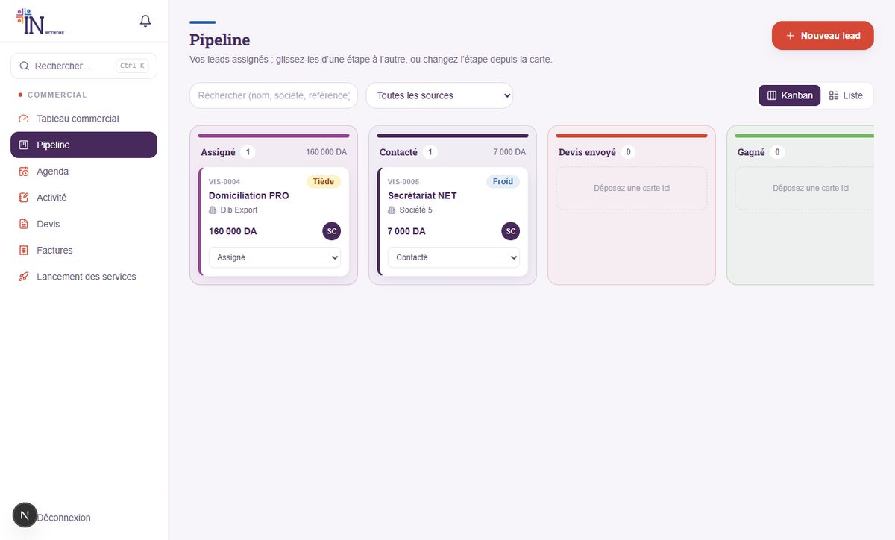
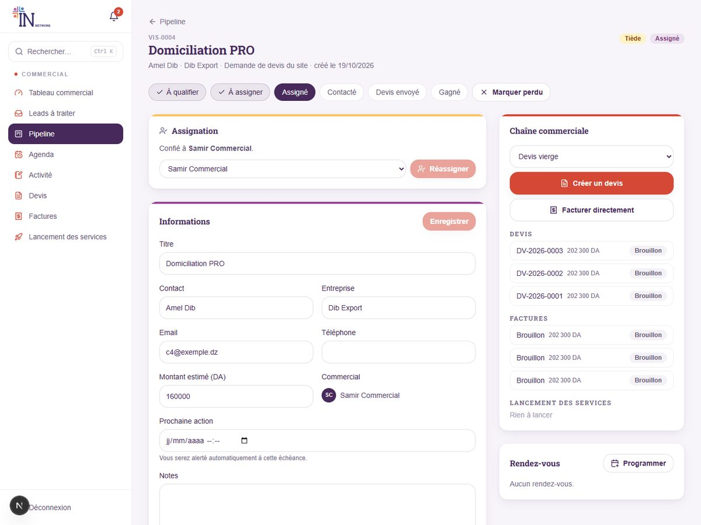
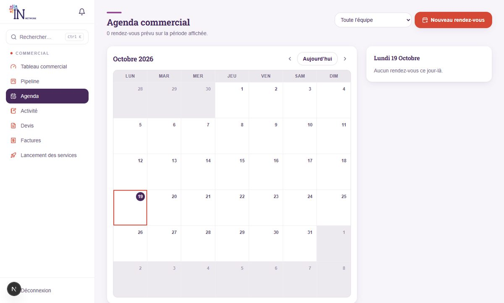
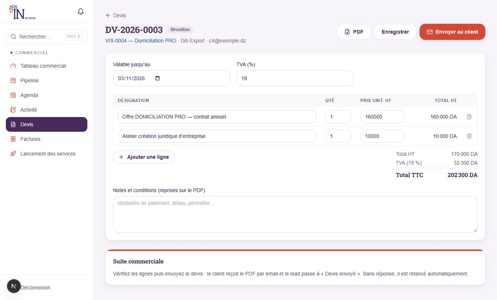
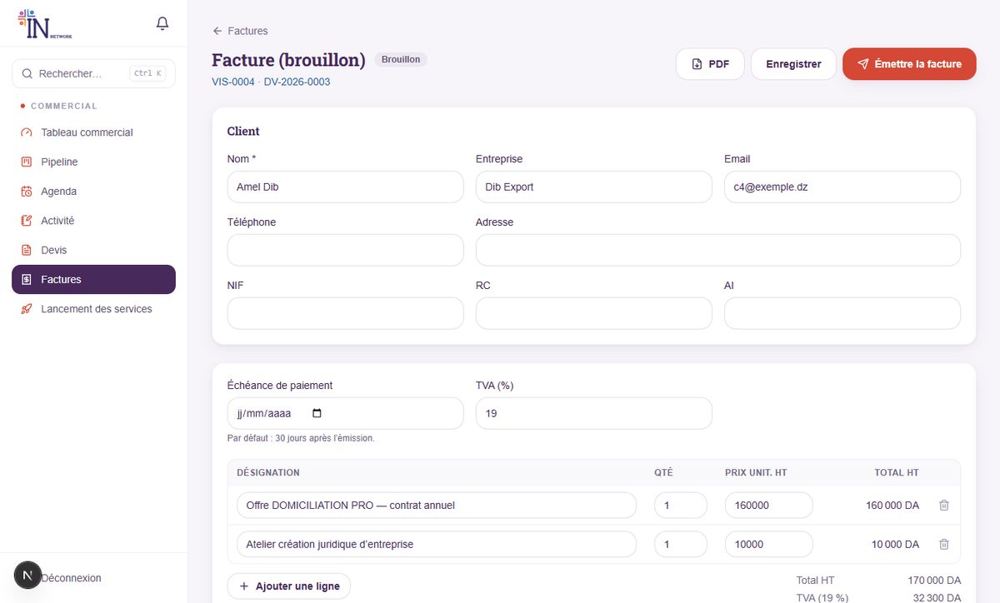
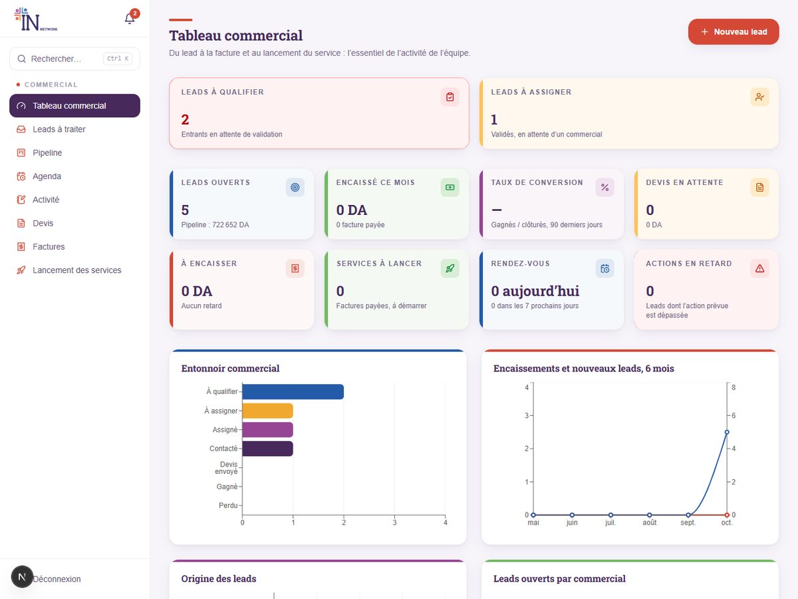
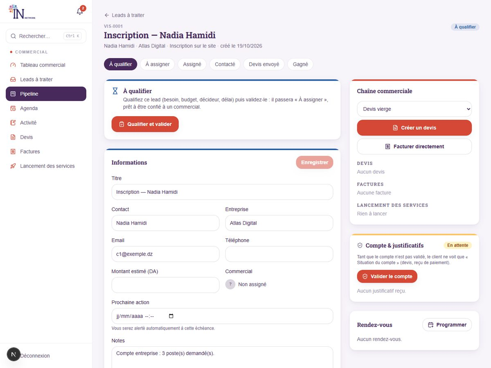

Le principe : un seul parcours
Chaque lead avance d’étape en étape. Savoir où il en est, c’est savoir quoi faire.
| Étape | Qui s’en occupe ? | Ce qui se passe |
|---|---|---|
| À qualifier | Responsable commercial | Le lead vient d’arriver (site, inscription, contact). On vérifie qu’il est sérieux et on le qualifie. |
| À assigner | Responsable commercial | Validé, il attend un commercial. |
| Assigné | Vous | Il vous est confié : il faut le contacter. |
| Contacté | Vous | Premier échange passé (automatique dès votre premier appel, email, réunion ou visite journalisé). |
| Devis envoyé | Vous | Le devis est parti (automatique à l’envoi). |
| Gagné / Perdu | Vous | Gagné : devis accepté ou facture payée. Perdu : motif obligatoire. |
Vous ne voyez que vos leads. Le responsable commercial voit tout. Vos collègues ne voient pas les vôtres.
1 Démarrer Commerciaux
- Connectez-vous sur
votre-site/adminavec l’email et le mot de passe reçus. - Changez votre mot de passe : menu Système → Mon compte.
- Surveillez la cloche 🔔 : quand le responsable vous assigne un lead, vous êtes notifié ; un clic ouvre la fiche.
- Gardez sous la main la recherche Ctrl + K (leads, devis, factures).

Votre menu Commercial contient : Tableau commercial, Pipeline, Agenda, Activité, Devis, et selon vos droits Factures et Lancement des services.
2 Votre pipeline Commerciaux
Menu Pipeline : vos leads en colonnes, de « Assigné » à « Perdu ».

- Ouvrir un lead : cliquez sur la carte.
- Changer l’étape : faites glisser la carte vers une autre colonne, ou utilisez la liste déroulante en bas de la carte.
- Passer en « Perdu » : une fenêtre demande le motif (prix, concurrent, pas de suite…). Il est obligatoire.
- Vue Liste : un tableau plus dense, utile pour trier.
- Couleurs de température : Froid Tiède Chaud — posées par le responsable à la qualification. Traitez les chauds en premier.
Un lead que vous créez vous est attribué mais reste « À qualifier » jusqu’à validation par le responsable : un bandeau vous le rappelle au-dessus du pipeline.
Vous pouvez ajouter un lead à la main (« Nouveau lead ») pour un appel entrant, une visite ou une recommandation : renseignez le titre, le contact, la source et le montant estimé.
3 La fiche d’un lead Commerciaux
Tout ce qui concerne un client est sur une seule page.

- Parcours (haut de page) : les étapes déjà franchies sont cochées. Vous cliquez sur « Contacté », « Devis envoyé » ou « Gagné » pour avancer ; « Marquer perdu » demande un motif.
- Informations : titre, contact, entreprise, email, téléphone, montant estimé, prochaine action (une date : vous serez alerté à l’échéance) et notes. Cliquez sur « Enregistrer » après modification.
- Qualification : la température, le besoin, le budget, le décideur et le délai notés par le responsable — votre point de départ pour l’appel.
- Demande du client (site) : si le lead vient du panier du site, les lignes demandées et leurs prix sont affichées.
- Chaîne commerciale : boutons « Créer un devis » et « Facturer directement », et la liste des devis, factures et lancements liés.
- Compte & justificatifs : si le client a un compte membre, vous voyez son état (validé ou en attente) et ses reçus de paiement.
4 Journal et rendez-vous Commerciaux
Chaque échange doit laisser une trace : c’est votre mémoire et le reporting de l’équipe.
Journaliser un échange
- Dans « Journal et échanges », choisissez le type : Note, Appel, Email, Réunion ou Visite.
- Écrivez le compte rendu : ce qui a été dit, décidé, la suite.
- Pour prévenir un collègue, cochez son nom dans « Notifier un collègue (mention) ».
- Cliquez sur « Ajouter au journal ».
Dès que vous journalisez un appel, un email, une réunion ou une visite sur un lead « Assigné », il passe tout seul à « Contacté ». Une simple note ne change pas l’étape.
Programmer un rendez-vous
Carte « Rendez-vous » → « Programmer » : type (appel, visite, réunion), date et heure, lieu. Un rappel vous est envoyé dans les 24 heures qui précèdent. Après le rendez-vous, cliquez sur « Marquer effectué » (ou « Annuler »).

Le menu Activité présente votre journal par jour : utile pour préparer votre reporting.
5 Envoyer un devis Commerciaux
- Sur la fiche du lead, choisissez dans la liste le point de départ : « Devis pré-rempli avec la demande » (si le lead vient du site), « Devis vierge » ou un modèle (ex. Création d’entreprise — formule Complet).
- Cliquez sur « Créer un devis » : le brouillon s’ouvre.
- Vérifiez les lignes : désignation, quantité, prix unitaire HT. Ajoutez ou supprimez des lignes. La TVA (19 % par défaut) et le total TTC se calculent seuls.
- Réglez la validité (15 jours par défaut) et les notes et conditions, reprises sur le PDF (modalités de paiement, délais…).
- Cliquez sur « Enregistrer », vérifiez le PDF si vous voulez, puis « Envoyer au client ».

Après l’envoi
- Le client reçoit un email avec le PDF ; le lead passe à Devis envoyé.
- Sans réponse, il est relancé automatiquement (tous les 3 jours, 2 fois maximum). Passé sa date de validité, il devient « Expiré ».
- Le client accepte ? Cliquez sur « Marquer accepté » : le lead passe à Gagné. Refus ? « Marquer refusé ».
- Un devis refusé ou expiré peut être rouvert (bouton « Rouvrir ») pour repasser en brouillon : corrigez-le puis renvoyez-le. Impossible si une facture existe déjà pour ce devis.
Un devis envoyé n’est plus modifiable tant qu’il n’est pas rouvert. Les prix du catalogue sont une aide : vous pouvez les adapter ligne par ligne.
L’envoi est refusé si le devis n’a aucune ligne, si une ligne n’a pas de prix (les lignes « sur devis » démarrent à 0 : chiffrez-les) ou si la date de validité est dépassée. Si le lead n’a pas d’adresse email, le devis est marqué « envoyé » mais rien n’est expédié : téléchargez le PDF et remettez-le vous-même, ou ajoutez l’email dans « Informations » avant l’envoi.
6 Facturer et encaisser Commerciaux
Disponible si le bloc « Factures » vous est ouvert ; sinon la facture est préparée par la personne en charge de la facturation.
- Depuis le devis accepté, cliquez sur « Créer la facture » (ou « Facturer directement » depuis la fiche du lead). Un brouillon est créé avec les lignes du devis.
- Complétez le client : nom, entreprise, email, téléphone, adresse et, pour une entreprise, NIF, RC et AI.
- Cliquez sur « Émettre la facture » : elle reçoit son numéro définitif (FA-AAAA-0001…) et une échéance (30 jours par défaut). Vous pouvez choisir de l’envoyer par email en même temps.
- Quand le client paie : « Enregistrer le paiement » → mode de paiement (virement, espèces, chèque, carte), date de réception, référence (n° de virement…).

- Le numéro n’est attribué qu’à l’émission : la suite des numéros n’a jamais de trou.
- Une facture émise n’est plus modifiable. En cas d’erreur : « Annuler la facture » avec un motif, puis créez-en une nouvelle.
- Un brouillon, lui, peut être supprimé.
- Les factures échues sont relancées automatiquement chaque semaine (3 fois maximum).
À l’enregistrement du paiement, le lead passe à Gagné et les services sont lancés automatiquement (section suivante).
7 Lancer le service Commerciaux
Menu Lancement des services (selon vos droits).
Chaque ligne de facture payée devient une commande de service avec sa checklist. Exemple : une « création d’entreprise — Complet » génère les 9 étapes à suivre (nom commercial au CNRC, statuts chez le notaire, bail, déclaration d’existence, compte bancaire, NIF, registre de commerce, CASNOS, NIS). Les formules Essentiel (étapes 1 à 4) et Avancé (1 à 7) n’affichent que leurs étapes, quand la ligne de facture porte bien la formule choisie.
- Cochez les étapes au fil de l’avancement : l’avancement et le statut (À lancer / En cours / Livré) se mettent à jour.
- Désignez un responsable et une échéance, ajoutez des notes internes ou une étape de plus.
- Quand tout est coché, la commande passe « Livré » et le client est informé.
- Pour une formule d’abonnement payée par un membre, son abonnement est activé automatiquement.
8 Alertes et relances automatiques Commerciaux
La plateforme travaille pour vous, toutes les heures :
| Déclencheur | Ce qui se passe |
|---|---|
| « Prochaine action » arrivée à échéance | Vous êtes alerté (cloche). |
| Aucune activité depuis 7 jours sur un lead ouvert | Alerte « Lead sans activité ». |
| Rendez-vous dans les 24 h | Rappel. |
| Devis sans réponse | Email de relance au client (tous les 3 jours, 2 fois) et alerte pour vous. |
| Facture échue | Rappel de paiement au client (chaque semaine, 3 fois) et alerte pour vous. |
Renseignez toujours une prochaine action avec une date sur chaque lead ouvert : c’est ce qui évite qu’il s’endorme.
9 Leads à traiter Responsable commercial
Votre porte d’entrée : tout ce qui arrive y atterrit, et vous êtes prévenu par la cloche.

Trois sources alimentent la page : les inscriptions de nouveaux membres, les demandes de devis du site et de l’espace membre, et le formulaire de contact. Vous pouvez aussi créer un lead à la main : « Nouveau lead » (en choisissant un commercial, il est validé et assigné d’emblée).
Le Tableau commercial affiche en tête le nombre de leads à qualifier et à assigner, pour ne rien laisser traîner.

10 Qualifier et valider Responsable commercial
- Cliquez sur « Qualifier » sur la carte du lead.
- Température : Froid, Tiède ou Chaud.
- Besoin, budget, décideur, délai, notes : en quelques mots. Ces champs apparaissent ensuite sur la fiche, pour le commercial.
- Assigner dans la foulée (« Valider et assigner ») ou laisser « Valider sans assigner ».
- Validez : le lead passe « À assigner » (ou « Assigné »). Pour écarter : « Écarter… » avec un motif.

Lead d’inscription = compte à valider. Quand vous qualifiez une inscription, la case « Valider aussi le compte membre » (cochée par défaut) ouvre l’espace du client et le prévient : il n’y a pas de seconde validation à faire. L’inverse fonctionne aussi : un compte validé depuis la page « Validations » fait passer son lead à « À assigner ».

11 Assigner et réassigner Responsable commercial
- Dans la colonne « À assigner », ouvrez la liste « Choisir un commercial… » : l’équipe commerciale d’abord, avec le nombre de leads en cours de chacun.
- Choisissez, puis cliquez sur « Assigner ». Le commercial est notifié et le lead passe « Assigné ».
- Réassigner : sur la fiche du lead, carte « Assignation » → choisissez un autre commercial → « Réassigner ». L’ancien et le nouveau commercial sont prévenus.
- Retirer le commercial n’est possible qu’au stade « Assigné » (le lead retourne « À assigner »). Un lead déjà « Contacté » ou « Devis envoyé » doit être confié à un autre commercial, pas laissé sans responsable.
- Un lead « À qualifier » ne peut pas être assigné : qualifiez-le d’abord.

12 Suivre l’équipe Responsable commercial
- Pipeline : tous les leads, filtrables par commercial, par source ou par recherche ; vue Kanban ou Liste. Le bandeau bleu signale les leads qui attendent votre décision.
- Tableau commercial : entonnoir, leads ouverts par commercial, encaissements, devis en attente, factures à encaisser, actions en retard.
- Activité : le journal de toute l’équipe par jour et par commercial — votre reporting quotidien, sans rien demander à personne.
- Agenda : les rendez-vous de l’équipe.
- Automatisations : le bouton « Exécuter maintenant » du Tableau commercial lance immédiatement relances et alertes (elles tournent de toute façon chaque heure).
Un lead « À qualifier » depuis plus de quelques jours, c’est un client qui attend. Traitez la page « Leads à traiter » en premier, chaque matin.
13 Modèles de devis Responsable commercial
Un modèle pré-remplit les lignes, la validité et les notes d’un devis en un clic : c’est ce qui garantit des prix homogènes dans toute l’équipe. Seuls les comptes qui gèrent les leads peuvent créer, modifier ou supprimer un modèle ; tous les commerciaux peuvent l’utiliser.
Modèles déjà disponibles : création d’entreprise (Essentiel, Avancé, Complet), formation à la création d’entreprise, secrétariat NET. Pour en ajouter : page Devis, onglet des modèles.
14 Bonnes pratiques
- Premier contact rapide : appelez un lead assigné dans la journée, surtout s’il est « Chaud ».
- Tout journaliser : un appel non noté n’a pas eu lieu pour le reste de l’équipe.
- Toujours une prochaine action datée sur un lead ouvert.
- Motif de perte honnête : il nourrit les statistiques et améliore l’offre.
- Prix : partez des modèles et du catalogue ; ne promettez pas un tarif qui n’y figure pas sans accord du responsable.
- Données clients : n’exportez ni ne partagez de fiches clients en dehors de la plateforme.
15 Questions fréquentes
- Je ne vois aucun lead dans mon pipeline.
- Aucun ne vous est assigné pour le moment. Le responsable commercial vous les confie après qualification ; vous êtes notifié dans la cloche.
- Je n’arrive pas à passer un lead à « Contacté » ou « Devis envoyé ».
- S’il est encore « À qualifier », il attend la validation du responsable. Une fois assigné, journalisez un appel : il passe seul à « Contacté ».
- Le bouton « Envoyer au client » ne fonctionne pas.
- Vérifiez que le devis contient au moins une ligne, que toutes les lignes ont un prix et que la date de validité n’est pas dépassée. Vérifiez aussi l’adresse email du client sur sa fiche.
- Je me suis trompé dans un devis déjà envoyé.
- Si le devis est refusé ou expiré : « Rouvrir », corrigez puis renvoyez-le. S’il a déjà été facturé, annulez d’abord la facture, puis rouvrez-le. Sinon, demandez conseil au responsable commercial.
- Je me suis trompé dans une facture émise.
- Annulez-la avec un motif et créez-en une nouvelle : une facture émise n’est jamais modifiée.
- Je ne vois pas « Factures » ou « Lancement des services ».
- Ces blocs ne vous sont pas ouverts. Demandez-les à l’administrateur si votre poste le justifie.
- (Responsable) Je ne vois pas « Leads à traiter ».
- Votre compte doit avoir le droit « Qualifier, valider et assigner les leads » : demandez à l’administrateur de le vérifier.
- (Responsable) Je ne peux pas retirer le commercial d’un lead.
- Possible uniquement tant qu’il est « Assigné ». Au-delà, réassignez-le à un autre commercial.